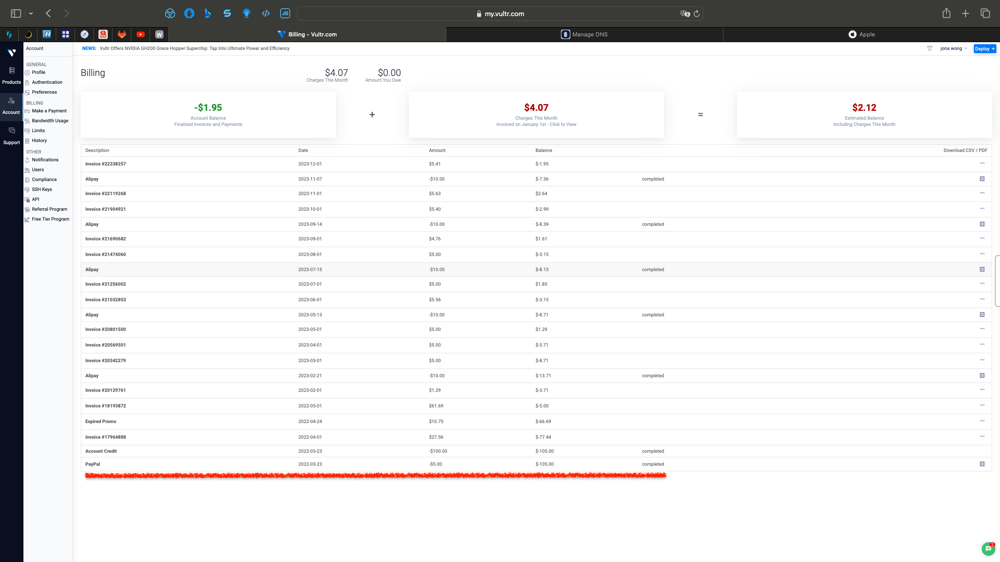
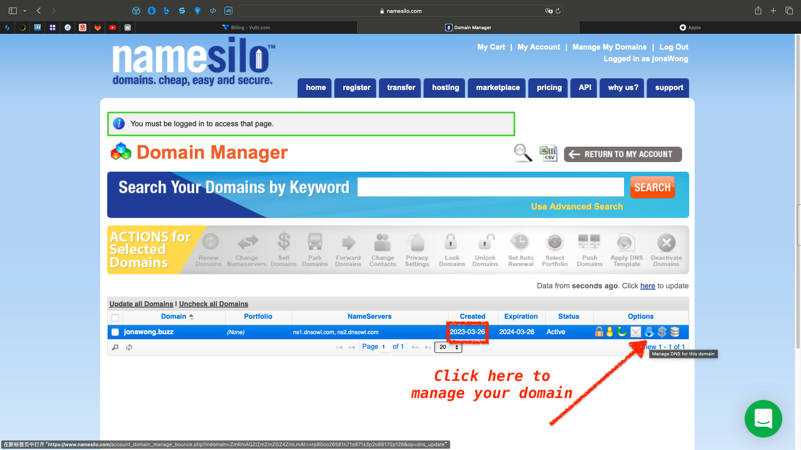
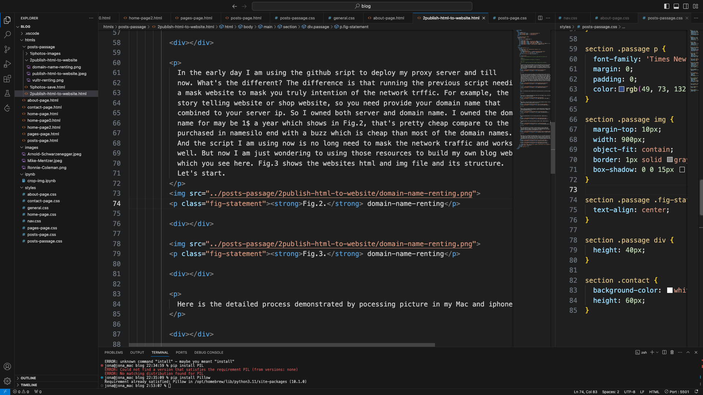

I rent the vultr sever since 2023-3-23 for 5$ every month as you can see in Fig.1. However, I am just using the server to proxy my network traffic which destorys the barries between me and english resource. So the price I paied is just for english environment and language listening. Yes, my english listening is improving since then and still improving now because I am keeping paying the bills for my english learning.
Fig.1. vultr renting
In the early day I am using the github sript to deploy my proxy server and till now. What's the different? The difference is that running the previous script needing a mask website to mask you truly intention of the network trffic. For example, the story telling website or shop website, so you need provide your domain name that combined to your server ip. So I owned both server and domain name. I owned the domain name for may be 1$ a year which shows in Fig.2, that's pretty cheap compare to the server. The domain is purchased in namesilo end with a buzz which is cheap than most of the domain names. And the script I am using now is no long need to mask the network traffic and works well. But now I am just wondering to using those resources to build my own blog website which you see here. Fig.3 shows the websites html and img file and its structure. Let's start.
Fig.2. domain name renting
Fig.3. blog html files
Here is the detailed process demonstrated by pocessing picture in my Mac and iphone.
First of all, we should open photo app in Mac just like showed in Fig.1 (First make sure there is no photos app opend).

Fig.1. Open photos App in this page
Open photos: click left button of mouse with the option keyboard pressed. The result showed in Fig.2 after you open photos in this way.

Fig.2. After click the photos App
Now we create a new photoslibrary and set it system photoslibrary showed in Fig.3. Here my now photoslibrary is called Photos Library 11.photoslibrary. Remember to end by the photoslibrary extension.

Fig.3. Create a new photoslibrary
Set the new photoslibrary to be the system photoslibrary. Demonstrated in Fig.4.

Fig.4. Set system photoslibrary
To download photos from icloud and download original format. Demonstrated in Fig.5.

Fig.5. Turn on the downloading option
Now I have upload part of my photos to SSD and delete it from my iphone and then the icloud will delete it also. And set a new photoslibrary to syn the new photos that will upload to icloud because the icloud have spared some space because our deleting procedure which demonstrats in Fig.6.

Fig.6. Uploading status of iphone and Syn status of Mac
After Mac syn is finished which demonstrated in Fig.7 you can should copy the photoslibrary to you SSD which demonstrated in Fig.8. And now you have you server's photo in your SSD, so you should can delete your photos in your iphone and then the server's space will also be spared. After that, you should creat a new photoslibrary just like Fig.3 and set it be system photoslibrary just the same in Fig.4. The new photoslibrary will syn the new photos once there is new photo shotted by your iphone.

Fig.7. finish syn status of Mac

Fig.8. copy photoslibrary to SSD